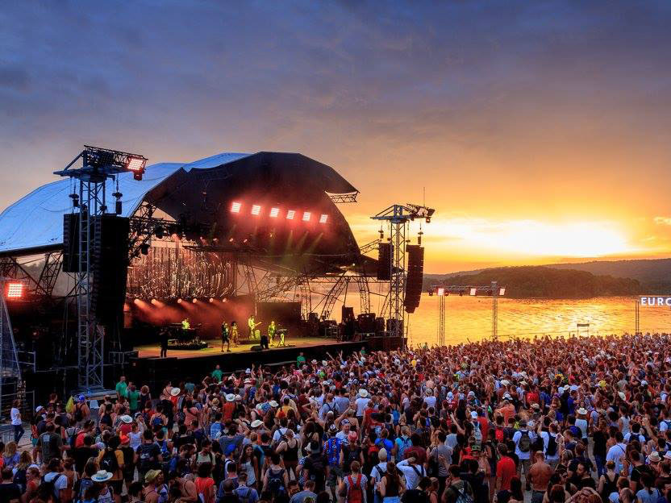
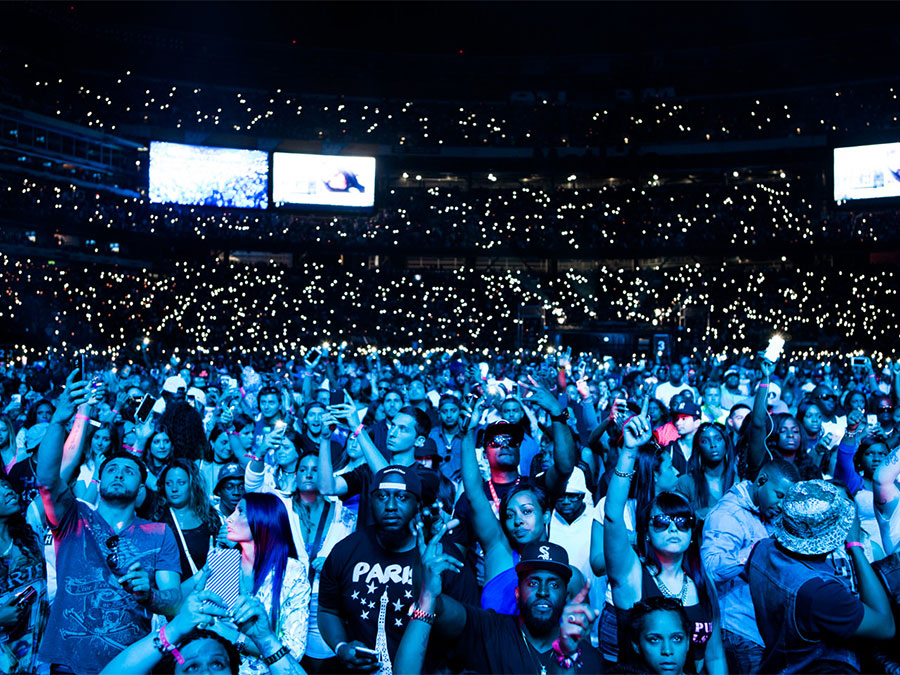

Festival lineup: Skepta, Kings of Leon, The 1975, Dizzee Rascal, The Kooks, Loyle Carner, Mura Masa, Damian Marley
Hidden amongst the swell and sunshine of the south-west coast of England, Boardmasters mixes the best boarders in the world – whether they’re surfers or skaters – with BMX kings, and soundtracks the action with dance dons, folk stars, and pop favourites.
With cliff-top sessions and surf shack shows, it's only a cocktail short of the best weekend of the year. Ready to make your Instagram followers jealous?
When & where: 5-9th August 2020; Newquay

Les Eurockéennes
One of the biggest festivals that France has to offer, Les Eurockéennes is not known simply for its rich history and consistently strong lineups, but also for its longstanding links to charitable and community causes. What's more, you'd be hard pushed to find many more naturally beautiful settings than the lakeside nature reserve that it calls home.
When & where: 4-7 July 2019, Belfort, France

Hot 97 Summer Jam
No festival has been more integral to the development of hip hop than Hot 97 Summer Jam. Giving a platform to the freshest names, as well as providing fans with an opportunity to see the superheroes of rap, the festival has hosted its fair share of classic moments, with performers bringing out huge special guests having become the norm. Anyone who’s anyone has played Summer Jam.
When & where: June 2020, East Rutherford, USA